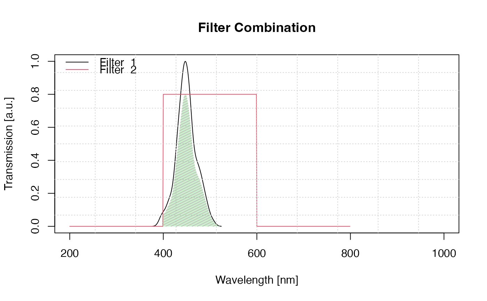
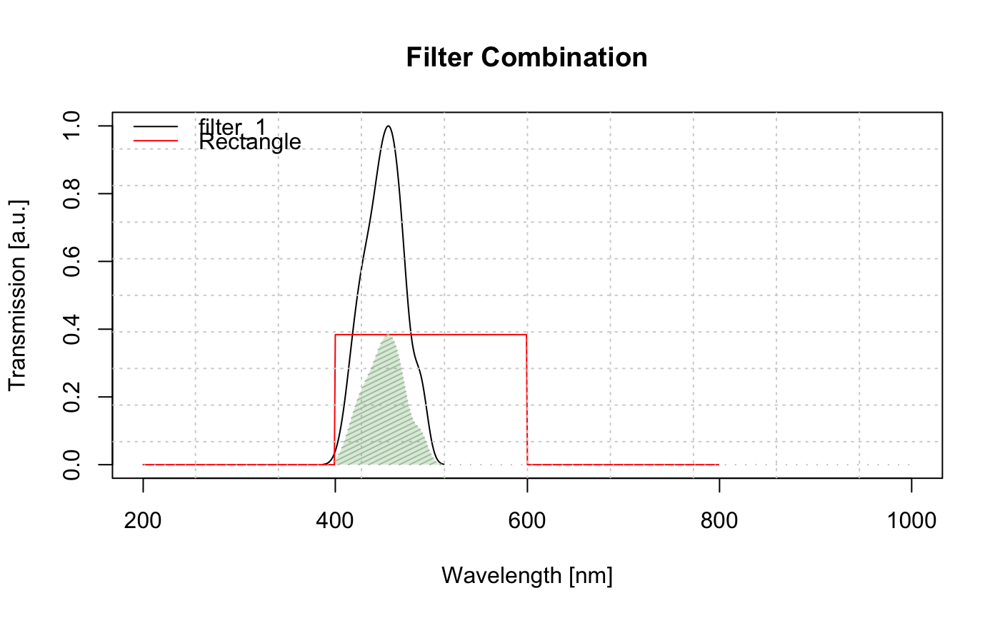

Plot filter combinations along with the (optional) net transmission window
Source:R/plot_FilterCombinations.R
plot_FilterCombinations.RdThe function allows to plot transmission windows for different filters. Missing data for specific wavelengths are automatically interpolated for the given filter data using the function approx. With that a standardised output is reached and a net transmission window can be shown.
Usage
plot_FilterCombinations(
filters,
wavelength_range = 200:1000,
show_net_transmission = TRUE,
interactive = FALSE,
plot = TRUE,
...
)Arguments
- filters
list (required): a named list of filter data for each filter to be shown. The filter data itself should be either provided as data.frame or matrix. (for more options s. Details)
- wavelength_range
numeric (with default): wavelength range used for the interpolation
- show_net_transmission
logical (with default): show net transmission window as polygon.
- interactive
logical (with default): enable/disable interactive plot
- plot
logical (with default): enables or disables the plot output
- ...
further arguments that can be passed to control the plot output. Supported are
main,xlab,ylab,xlim,ylim,type,lty,lwd. For non common plotting parameters see the details section.
Value
Returns an S4 object of type RLum.Results.
@data
Object | Type Description | net_transmission_window |
matrix | the resulting net transmission window | OD_total |
matrix | the total optical density | filter_matrix |
@info
| Object | Type Description | call |
Details
Calculations
Net transmission window
The net transmission window of two filters is approximated by
$$T_{final} = T_{1} * T_{2}$$
Optical density
$$OD = -log10(T)$$
Total optical density
$$OD_{total} = OD_{1} + OD_{2}$$
Please consider using own calculations for more precise values.
How to provide input data?
CASE 1
The function expects that all filter values are either of type matrix or data.frame
with two columns. The first columns contains the wavelength, the second the relative transmission
(but not in percentage, i.e. the maximum transmission can be only become 1).
In this case only the transmission window is show as provided. Changes in filter thickness and reflection factor are not considered.
CASE 2
The filter data itself are provided as list element containing a matrix or
data.frame and additional information on the thickness of the filter, e.g.,
list(filter1 = list(filter_matrix, d = 2)).
The given filter data are always considered as standard input and the filter thickness value
is taken into account by
$$Transmission = Transmission^(d)$$
with d given in the same dimension as the original filter data.
CASE 3
Same as CASE 2 but additionally a reflection factor P is provided, e.g.,
list(filter1 = list(filter_matrix, d = 2, P = 0.9)).
The final transmission becomes:
$$Transmission = Transmission^(d) * P$$
Advanced plotting parameters
The following further non-common plotting parameters can be passed to the function:
Argument | Datatype | Description |
legend | logical | enable/disable legend |
legend.pos | character | change legend position (graphics::legend) |
legend.text | character | same as the argument legend in (graphics::legend) |
net_transmission.col | col | colour of net transmission window polygon |
net_transmission.col_lines | col | colour of net transmission window polygon lines |
net_transmission.density | numeric | specify line density in the transmission polygon |
grid | list | full list of arguments that can be passed to the function graphics::grid |
For further modifications standard additional R plot functions are recommend, e.g., the legend can be fully customised by disabling the standard legend and use the function graphics::legend instead.
Author
Sebastian Kreutzer, Institute of Geography, Heidelberg University (Germany) , RLum Developer Team
How to cite
Kreutzer, S., 2024. plot_FilterCombinations(): Plot filter combinations along with the (optional) net transmission window. Function version 0.3.2. In: Kreutzer, S., Burow, C., Dietze, M., Fuchs, M.C., Schmidt, C., Fischer, M., Friedrich, J., Mercier, N., Philippe, A., Riedesel, S., Autzen, M., Mittelstrass, D., Gray, H.J., Galharret, J., Colombo, M., 2024. Luminescence: Comprehensive Luminescence Dating Data Analysis. R package version 0.9.25. https://r-lum.github.io/Luminescence/
Examples
## (For legal reasons no real filter data are provided)
## Create filter sets
filter1 <- density(rnorm(100, mean = 450, sd = 20))
filter1 <- matrix(c(filter1$x, filter1$y/max(filter1$y)), ncol = 2)
filter2 <- matrix(c(200:799,rep(c(0,0.8,0),each = 200)), ncol = 2)
## Example 1 (standard)
plot_FilterCombinations(filters = list(filter1, filter2))

## Example 2 (with d and P value and name for filter 2)
results <- plot_FilterCombinations(
filters = list(filter_1 = filter1, Rectangle = list(filter2, d = 2, P = 0.6)))

results
#>
#> [RLum.Results-class]
#> originator: plot_FilterCombinations()
#> data: 3
#> .. $net_transmission_window : matrix
#> .. $OD_total : matrix
#> .. $filter_matrix : matrix
#> additional info elements: 1
## Example 3 show optical density
plot(results$OD_total)
if (FALSE) { # \dontrun{
##Example 4
##show the filters using the interactive mode
plot_FilterCombinations(filters = list(filter1, filter2), interactive = TRUE)
} # }